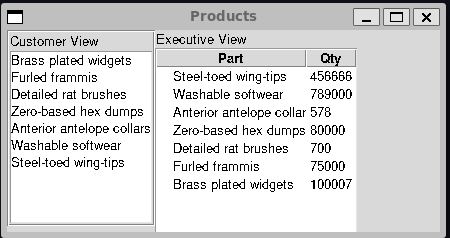
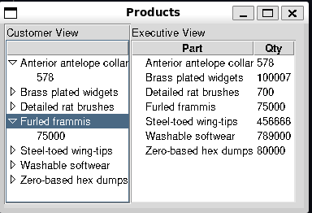

---
title: "The Bridge Pattern"
---
classDiagram
class Abstraction {
<<interface>>
+operation()
}
class Abstraction1 {
+operation()
}
class Implementer {
+operationImp()
}
class Implementer1 {
+operationImp()
}
Abstraction1 --|> Abstraction
Abstraction1 --> Implementer : imp.operationImp()
Implementer1 --|> Implementer
Chapter 13: The Bridge Pattern
Notes
- The Bridge Pattern appears superficially like that of the adapter pattern
- In that we decouple an interface from a class that implements the interface
- In the case of the adapter the coupling serves to help us link two classes or interfaces not originally co-designed
- In the bridge pattern we decouple the interface from the implementation so that we can vary both independently
- Allows us to vary the interface
- Potentially then implement it with multiple classes
- Or, vary the implementation
- Allows us to vary the interface
Suppose we have a program displaying products in a window
- The simplest interface is that of a listbox
- After a number of product’s have been sold we may also wish to view a table of sales figures for the products
These are distinct views, but we want to capture them under one class interface
First we define our basic
Productclass for the exampleclass Product: """ A basic class representing a product Parameters ---------- name : str The name of the product count : int Stock level of the product """ @classmethod def from_string(cls, product: str) -> Product: """ Create a product from a delimited string The string must be delimited as `"name--count"` Parameters ---------- product : str The delimited string to parse Returns ------- Product Product created from the delimited string """ name, count = product.split("--") name = name.strip() count = int(count.strip().replace(",", "")) return cls(name, count) def __init__(self, name: str, count: int) -> None: """ Create a new Product Parameters ---------- name : str Product name count : int Current product stock level """ self.name = name self.count = count def parse_products_from_file(file: str) -> Sequence[Product]: """ Parse a list of products from a file Each of the products in the file must be a delimited string following the conventions of `Product.from_string` Parameters ---------- file : str path to the file to parse Returns ------- Sequence[Product] Products parsed from the file """ with open(file) as file_stream: products = [Product.from_string(line) for line in file_stream.readlines()] return productsThis consists of a basic class containing a
nameand acount- Plus a class method to convert from a string
We then also define a free function
parse_products_from_filewhich reads lines from a file and converts them into a list ofProductinstances
Defining the Bridge and Implementation Classes
We start by defining a basic bridge class
- Only has one method, it should receive data and pass it on to a display class
class Bridge(tk.ttk.Frame): """ Bridge class defining a simple abstract interface """ @abc.abstractmethod def add_data(self, products: Sequence[Product]) -> None: """ Add data to a display """ passNext we need to define our implementation classes
These are usually a more elaborate low-level interface
- Here the implementation classes provide methods for adding specific lines
class Display(tk.Widget): """ Display class defining an abstract implementation """ @abc.abstractmethod def add_lines(self, lines: Sequence[Product]) -> None: """ Add lines to a display Parameters ---------- lines : Sequence[Product] lines to add """ passNow with the basic structure for our pattern set-up we provide concrete implementations
For the
Listboxclass ListBoxDisplay(Display, tk.Listbox): """ A simple Product display using a Listbox """ def __init__(self, frame) -> None: """ Create a new ListBoxDisplay Parameters ---------- frame : tk.ttk.Frame The frame to place the widget into """ super().__init__(frame) def add_lines(self, lines: Sequence[Product]) -> None: for line in lines: self.insert(tk.END, line.name)For the
Treeviewwidgetclass TreeviewDisplay(Display, tk.ttk.Treeview): """ A simple Product display using a Treeview """ def __init__(self, frame) -> None: super().__init__(frame) self["columns"] = "quantity" self.column("#0", width=150, minwidth=100, stretch=tk.NO) self.column("quantity", width=50, minwidth=50, stretch=tk.NO) self.heading("#0", text="Part") self.heading("quantity", text="Qty") self.idx = 0 def add_lines(self, lines: Sequence[Product]) -> None: for line in lines: self.insert("", self.idx, text=line.name, values=(line.count,))
The last step is to then define a concrete implementation of our bridge interface to work with the
Displayclass DisplayBridge(Bridge): """ Concrete implementation of the Bridge connecting it to a display Attributes ---------- display the display being bridged """ def __init__(self, display: Display) -> None: """ Create a new `DisplayBridge` instance Parameters ---------- display : Display the display to bridge """ self.display = display self.display.pack() def add_data(self, products: Sequence[Product]) -> None: self.display.add_lines(products)
Creating the User Interface
With all the components defined with can now create our UI
class UIBuilder: """ Creates the product UI The UI is not initialised until the `build` method is called """ def __init__(self, root: tk.Tk) -> None: """ Create a new UIBuilder Parameters ---------- root : tk.Tk The base window to build the UI on """ self.root = root def build(self) -> None: """ Build the UI """ self.root.geometry("335x200") self.root.title("Products") products = parse_products_from_file("products.txt") left_frame = tk.ttk.Frame(self.root, width=200, borderwidth=2, relief=tk.GROOVE) left_label = tk.ttk.Label(left_frame, text="Customer View") left_label.pack(fill=tk.X) listbox_display = ListBoxDisplay(left_frame) listbox_bridge = DisplayBridge(listbox_display) listbox_bridge.add_data(products) left_frame.grid(row=0, column=0, sticky=tk.N + tk.W) right_frame = tk.ttk.Frame(self.root) right_frame.grid(row=0, column=1, sticky=tk.E) right_label = tk.ttk.Label(right_frame, text="Executive View") right_label.pack(fill=tk.X) treeview_display = TreeviewDisplay(right_frame) treeview_bridge = DisplayBridge(treeview_display) treeview_bridge.add_data(products)The full program is given in bridge.py
The resulting program should look below

The Products program, both the Listbox and Treeview communicate with the main program via a bridge
Extending the Bridge
- The goal of the bridge pattern is to decouple the client-facing interface from the specific implementation
- The advantage this provides is clear when we either want to modify the interface, or the implementation
- For example, suppose we want to have the products displayed in alphabetical order
- Rather than modifying every
Displayimplementation, we just provide a newBridgeimplementation- This new
Bridgehas the same interface but internally sorts data before passing it onto the display
- This new
- Rather than modifying every
class SortedDisplayBridge(Bridge): """ Concrete implementation of the Bridge connecting it to a display, extended with additional functionality to sort the input alphabetically Attributes ---------- display the display being bridged """ def __init__(self, display: Display) -> None: """ Create a new `SortedDisplayBridge` instance Parameters ---------- display : Display the display to bridge """ self.display = display self.display.pack() def add_data(self, products: Sequence[Product]) -> None: products = sorted(products, key=lambda x: x.name) self.display.add_lines(products) - The only change in the client facing code is modifying the code to create a
SortedDisplayBridgerather than aDisplayBridge - We can also vary the implementation as well by simply adding new ones that can be wrapped by a bridge
- For example, suppose we want to modify the customer view so it now displays products as a tree
- We simply define a new implementation of
Displayand modify the clent code to create this widget rather than theListBoxDisplay
- We simply define a new implementation of
- For example, suppose we want to modify the customer view so it now displays products as a tree
class TreeDisplay(Display, tk.ttk.Treeview):
"""
A simple Product display using a Treeview to display a tree
"""
def __init__(self, frame) -> None:
"""
Create a new TreeDisplay instance
Parameters
----------
frame :
Frame to place the display within
"""
super().__init__(frame)
self.column("#0", width=150, minwidth=100, stretch=tk.NO)
self.idx = 0
def add_lines(self, lines: Sequence[Product]) -> None:
for line in lines:
product_line = self.insert("", self.idx, text=line.name)
self.insert(product_line, tk.END, text=str(line.count))
self.idx += 1The full code can be seen in extended_bridge.py
The resulting program should look like below,

The program has now been updated to display in sorted order and with a tree widget. Since the Bridge Pattern decouples the client interface and the implementation each is modified separately
Summary
- The Bridge pattern keeps the client-facing interface distinct from the implementation interface
- Enables modifying the internal interface or choice of concrete implementation without impacting the client
- Decouples changes to internal systems from the client-facing consumption
- The implementation and the bridge can be extended independently with minimal coupling
- Implementation details can be hidden from the client via limiting the exposed interface of the bridge